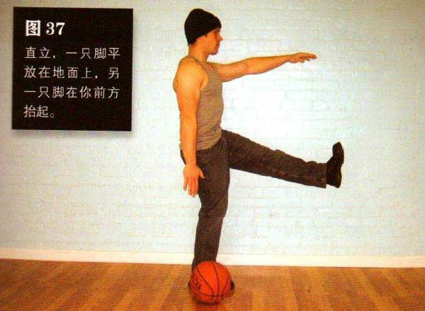
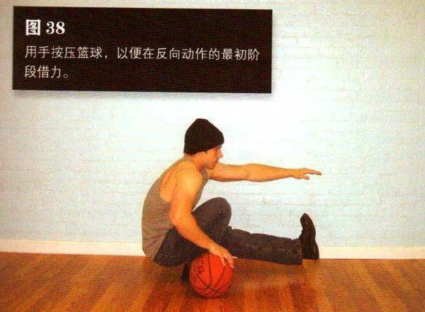

把篮球放在要练的那条腿的外侧。直立，一只脚平放在地面上，另一只脚在你前方抬起——同单腿半深蹲（第八式）的起始姿势。抬起那条腿的同侧手臂向前伸出，另一只手臂自然垂于体侧
然后弯曲髋部和支撑腿的膝盖，直到大腿后侧紧贴小腿，无法继续下蹲为止。此时，你的手应该稳稳地放在篮球上，这是该动作的最低点.起身时主要依靠腿部力量，但你也要用手按压篮球，以便在反向动作的最初阶段借力。注意，在动作过程中，支撑腿的脚跟始终不能抬离地面
如果你还达不到该练习的初级标准，那就试着使用比篮球高的物体，椅子或矮咖啡桌都是不错的选择。相比于使用篮球，这些物体可以在更大的运动范围内为你的手臂提供支撑。一旦你借助更高物体能完成该动作，就可以换用矮一些的物体，就这样循序渐进地练习，直到你准备好再次尝试用篮球做该动作。
初级标准：1 组，5 次（每侧）
中级标准：2 组，各 10 次（每侧）
高级标准：2 组，各 20 次（每侧）